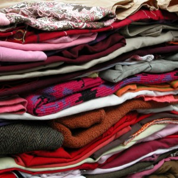
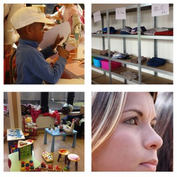
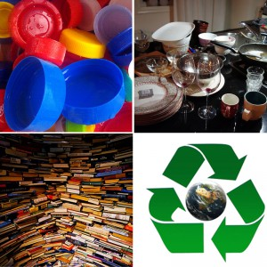
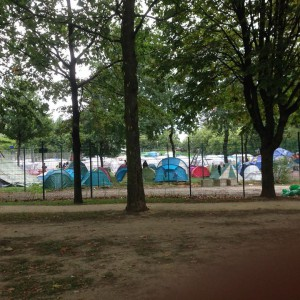

Cassorative
Une association qui pense aux autres.
Notre association
Depuis l’hiver 2012, grâce à la générosité de bénévoles de toutes les régions du pays et de certains Lions Clubs, plus de 5.000 sans abris ont pu bénéficier de vêtements et de produits de première nécessité. L'association étend sa mission humanitaire un peu plus chaque jour, aussi bien dans les communautés locales qu'aux quatre coins du monde. Les besoins étant nombreux, nous proposons des services couvrant une grande variété de domaines
Nos actions
-

Distribution de vêtements chauds.
Récolte, triage et distribution de vêtements aux démunis
-

Réintégration sociale.
Aide aux enfants SDF vivants dans la rue par le don de vêtements, couches culottes, matériel scolaire
-

Recyclage.
Récolte de matériel : tels que vaisselle, biens mobiliers afin de venir en aide aux associations aidant les personnes à se réinsérer dans la vie
-

Aide Humanitaire Locale Urgente.
Visant spécifiquement à venir en aide aux migrants en détresse
It does not matter how slowly you go as long as you do not stop.